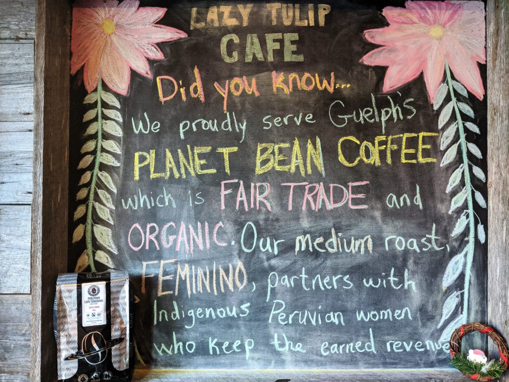
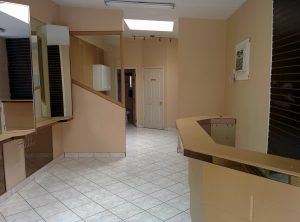
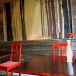
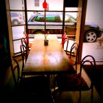
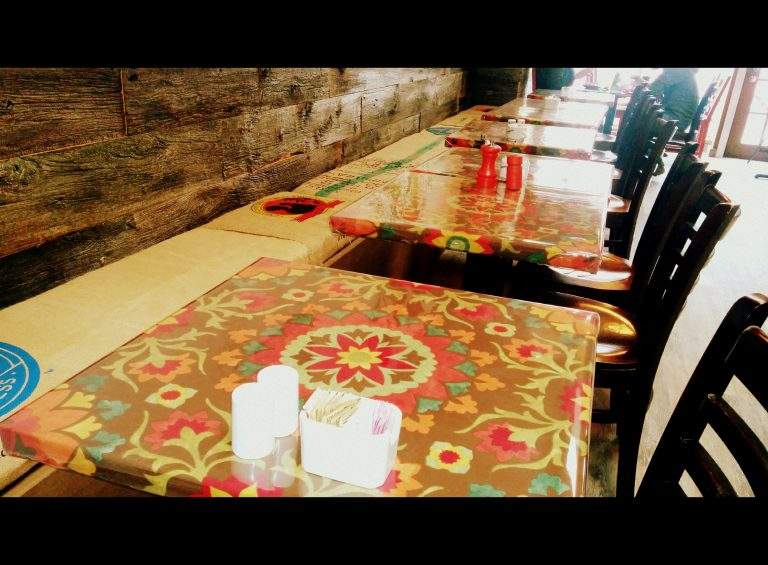
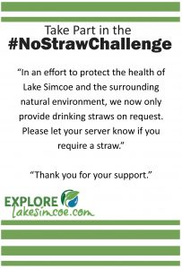

Blog
This Coffee Stands for Women
If you order a coffee at the Lazy Tulip Cafe we will free pour our fair trade & organic, Planet Bean medium roast coffee called Cafe Feminino. This coffee is bringing women together all over the world and we love it!
Guelph’s Planet Bean Coffee imports and roasts Café Feminino Fairtrade Organic coffee which is an initiative of some of the poorest women in Peru. It involves them growing their own coffee, keeping it separate from other coffee and keeping the revenue generated through its sale in their own hands. This initiative has empowered these women in Peru where men would normally control the household income. You will find the the Femenino movement is now worldwide with over 750 women involved in 50 communities.
The New Tulip - Giving Thanks!
Over the last five years the Lazy Tulip Cafe has organically grown our business allowing us to take over the unit next door which was previously set up as a hair salon. Over the years the salon shuffled hands a few times & during that shuffle I was always offered by the owner the opportunity to take it over but I had never felt ready until now.
On October 1st, 2016 I signed the lease for the new space then everything just happened to fall nicely into place. One of my customers recommended a contractor, Speare Contracting. Shawn quickly showed up at the café to check out the job and he just had an air about him that was trusting and seemed prideful of his work. There was an immediate comfort level there. At the next meeting Rick Speare also came to meet with me and it was a done deal. No need to look any further for contractors even though it was suggested I get multiple quotes. These guys seemed honest and I felt comfortable. I always follow my heart & that’s how I roll.
Rick & Shawn then suggested I work with a local architect, Rob Jeffries to get my drawings done. Rob’s office is located at the corner of Dunlop & Maple Avenue…. literally a stone’s throw from the café so again…done deal. Rob, with the help of Rob Mitchell were able to efficiently get my plans together for me.
As the City of Barrie’s Department of Planning & Building Services is pretty backed up they suggested that I get a “Conditional Permit” which allowed me to get the project started. In order to do so we had to have an authorized architect who would oversee the renovations on the city’s behalf. We were lucky to have Rob Mitchell in our court allowing us to move quickly & efficiently.
The demolition only took a couple of days as they ripped out mirrors, glass and partitions with remnants of hair dye & extensions. Once the floors & walls were patched and sanded our good friend & master painter Bobby Hatcher came in from Hamilton to give us a hand with Randy Aylwin by his right hand side. In a day the new colours were up and the space started to take shape!
Next Molly Aylwin, otherwise known as Madd Moll came up from Toronto to start the first phase of the wall mural. Brother Keenan was also there to help out as the Aylwins made it a family affair. In just a few hours the centerpiece of the room was finished and Molly nailed it. This girl never ceases to amaze me with how her creative brilliance comes to her with such ease. Over the Christmas holidays Molly was able to take the mural to Phase II adding more flowers, mandalas and a turquoise OM. Pure brilliance!
Shawn from Speare Contracting is an artist at heart as he brought the front entrance of the new space to life with some gorgeous reclaimed barn board. Having to leave the electrical panel accessible at all times we built a frame so that a canvas of some sort could be attached to it allowing the frame to be easily moved out from in front of the electrical panel. I had to find just the right piece for it…it wasn’t something I couldn’t rush into. Shawn suggested looking at drapes or shower curtains. Lo & behold on a trip to Walmart I came across this shower curtain. It was perfect. It gave the look of being able to look out the window into the forest on a fall day. The fun part? This can change…and it will. But for now this is perfect.
One of my most favorite past times is thrifting. All the light fixtures were thrifted at various stores around town. But the biggest score was the 8 foot harvest table in the window of the old Tulip that I purchased for just $25. Randy sanded it down just enough so that it still retained a lot of its character then took off about six inches on each side. We added a couple of layers of polyeurythene and some new table legs. We couldn’t be happier. The eight chairs around the table were also a thrift store purchase for just $6 each. I refinished the cushions to match the refinished table deuces that run along the bench to tie it all together.
The bench was Pinterest inspired with the frame & barn board backing built by Mike at Benson Wellington. Again the backing is reclaimed barn board that he lightly sanded down and finished. The bottom was basically just a wooden frame with a plywood front. I had sourced out some burlap coffee sacks from Planet Bean coffee from the actual coffee suppliers. With these I was able to put together the bench cushions that sat on top of the frame.
During all of this was the kitchen reno which was the most stressful and trying of them all. In order for us to remain open during all of this we had to pack up the kitchen every night then get in early the next morning to clean and set everything back up. However, the expanded space which we acquired by removing one bathroom was urgently needed in order to accommodate the extra seats! As a part of this kitchen reno was the need for more power! Thank you to Georgian Electric for being so accommodating and giving us a boost!
The next step in evolving our kitchen was the involvement of a culinary consultant. The first person that came to mind for me was my good friend Av Atikian. Av was the former chef at the Rosedale Diner for many years then opened up Jam Café in Toronto’s Cabbagetown. Now he’s taken on the role as a culinary consultant and was able to offer us up some much needed guidance on taking our kitchen to the next level!
Today our new space brings with it a sense of calm. I find that our customers are able to relax and take their time enjoying the experience. There is more space and more light allowing each person a chance to take it all in.
I just wanted to personally thank everyone who helped to make this project happen. Without everyone’s help & love this space would not have the beautiful, new energy it has today!
Straws Upon Request Policy Implemented
We are proud to be a part of the #nostrawchallenge initiated by Explore Lake Simcoe
The #nostrawchallenge initiative was recently featured in the Barrie Examiner – Saying no to plastic straws and on CTV News Barrie!
To learn more on how straws impact our environment check these links out!
Downtown Barrie Twitter Talks
On October 25th, 2016 we joined Shannon from the Downtown Barrie Business Association (BIA) to answer a series of questions. Check here to see how the conversation went!
Our Tulip Garden is Growing!
We have basically outgrown this cute little space and are branching off into the next unit!
As we await our building permit from the city our plans are set which will offer lots of extra seating while still retaining the intimacy of the original space. This will allow us to accommodate larger tables, private events and even give us the opportunity to open up later on Friday and Saturday nights.
Thank you to all of our loyal customers that have supported us throughout the years and have basically become our family.
Thanks to Sue Sgambati for writing up this article in BarrieToday.com! Lazy Tulip on BarrieToday.com